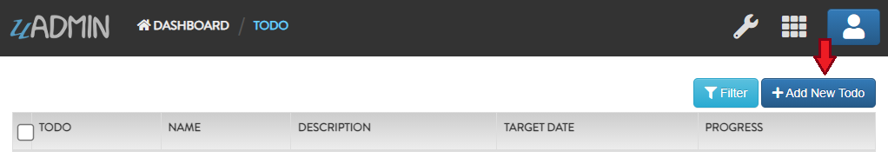

Register Functions¶
In this section, we will cover the following functions in-depth listed below:
uadmin.Register¶
Register is used to register models to uAdmin.
Function:
func(m ...interface{})
Parameter:
m …interface{}: Is the model that you want to add in the dashboard
Used in the tutorial:
Document System Tutorial Part 2 - Creating and Registering a Model
Document System Tutorial Part 5 - Linking Models (Documents)
Create an internal Todo model inside the main.go. Afterwards, call the Todo{} inside the uadmin.Register so that the application will identify the Todo model to be added in the dashboard.
// Todo model ...
type Todo struct {
uadmin.Model
Name string
Description string `uadmin:"html"`
TargetDate time.Time
Progress int `uadmin:"progress_bar"`
}
func main() {
uadmin.Register(Todo{}) // <-- place it here
}
Output

If you click the Todos model, it will display this result as shown below.
Quiz:
uadmin.RegisterInlines¶
RegisterInlines is a function to register a model as an inline for another model.
Function:
func RegisterInlines(model interface{}, fk map[string]string)
Parameters:
model (struct instance): Is the model that you want to add inlines to.
fk (map[interface{}]string): This is a map of the inlines to be added to the model. The map’s key is the name of the model of the inline and the value of the map is the foreign key field’s name.
Used in the tutorial:
Example:
type Person struct {
uadmin.Model
Name string
}
type Card struct {
uadmin.Model
PersonID uint
Person Person
}
func main() {
// ...
uadmin.RegisterInlines(Person{}, map[string]string{
"Card": "PersonID",
})
// ...
}
Quiz: